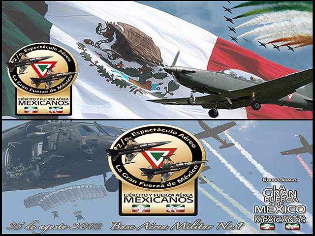
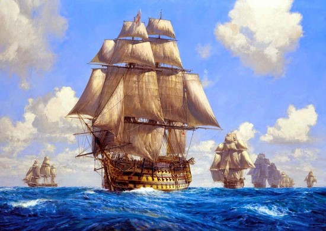
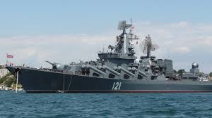

Mis aspiraciones y proyectos
Bueno pues La voca 3 era mi primer opción por la carrera de aeronautica y por que desde niño eh querido ser un piloto aviador del ejercito y aun quiero serlo y eso es desde que tengo memoria y cada desfile de la SEDENA yo iba solo por los pilotos aviadores por que ese es mi sueño desde niño y bueno entonces esa es mi razon de estar en la voca 3 pero esa es mi mayor aspiracion.

Bien pues a mi tambien me gustan los videojuegos 1 en especifico y es el Assasins creed Black Flag y bueno trata de los piratas y un amigo y yo teniamos un plan enorme y hoy en dia ahorramos diner para poder hacer un Navio de guerra pero mejor que como lo presentaban lo apodamos hijo del diablo por lo peligroso que sera, y sera un hijo del diablo entre las dos fotos de abajo y estoy seguro que quedara fantastico.


y va a ser un hijo del diablo por que lo pretendremos hacer un acorazado pero gigantesco como el varco de madera y con cañones de ambos barcos para poder perfeccionar y tener una obra maestra, ah y claro como sera acorasado y sera una mezcla de ambos pues tambien tendra los mastiles pero solo en casos de emergencia
Glosario de esta parte
Glosario
- Navio de guerra
- Se le llamó así porque fue el tipo de buque utilizado en una nueva formación de combate de las escuadras navales, formación utilizada entre los siglos xvii y xix y en la que los navíos se alineaban los unos detrás de los otros para formar un muro de artillería que pudiera disparar simultáneamente densas salvas contra la flota enemiga.
- SEDENA
- La Secretaría de la Defensa Nacional (SEDENA) es una dependencia del Poder Ejecutivo Federal,
cuyas funciones específicas se encuentran contenidas en la Ley Orgánica de la Administración
Pública Federal y, a la vez, constituye el Cuartel General Superior del Ejército y Fuerza Aérea
- Acorazado
- Buque de guerra provisto de una coraza de acero y armado con artillería del máximo calibre y del mayor alcance.